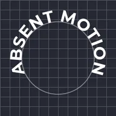

Tekst langs pad

Zet de tekst letter voor letter langs een boog, een cirkel of de omtrek van de laag direct eronder, met behoud van vormgeving, lettertypen en emoji van de tekst.
Kies het Pad: een boog of een cirkel rond de tekstlaag (sleep de punten op het canvas of typ ze in), of Laag eronder om te volgen wat in de lagenlijst direct onder de tekst ligt: een penpad, een vorm, de lijnen van een tekening of de letters van een andere tekst. Op een cirkel of een andere gesloten omtrek zet 50 % Positie de tekst bovenaan in het midden, van links naar rechts leesbaar, en 0 % is onderaan. Met Pad omkeren aan zet 0 % de tekst langs de onderkant, nog steeds van links naar rechts leesbaar. Een pad met meerdere delen wordt deel voor deel gevolgd. Tekst op een pad loopt niet door naar een nieuwe regel binnen zijn tekstvak: begin zelf een nieuwe regel voor een tweede rij.
Instellingen
| Instelling | Type | Bereik | Standaard |
|---|---|---|---|
| Pad | Keuze | Boog, Cirkel, Laag eronder | Boog |
| Positie | Getal | -500% tot 500% | 50% |
| Uitlijning | Keuze | Links, Midden, Rechts | Midden |
| Basislijnverschuiving | Getal | -2000 tot 2000 | 0 |
| Letters draaien | Aan of uit | – | Aan |
| Pad omkeren | Aan of uit | – | Uit |
| Begin | Punt (X, Y) | -20000 px tot 20000 px | -300 px, 80 px |
| Controlepunt 1 | Punt (X, Y) | -20000 px tot 20000 px | -200 px, -120 px |
| Controlepunt 2 | Punt (X, Y) | -20000 px tot 20000 px | 200 px, -120 px |
| Einde | Punt (X, Y) | -20000 px tot 20000 px | 300 px, 80 px |
| Midden | Punt (X, Y) | -20000 px tot 20000 px | 0 px, 0 px |
| Straal | Getal | 1 tot 20000 | 220 |